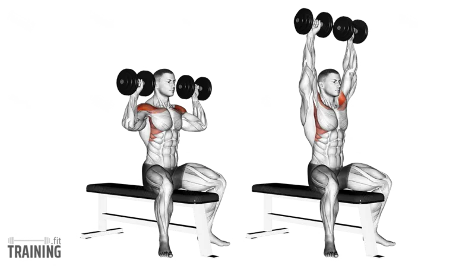
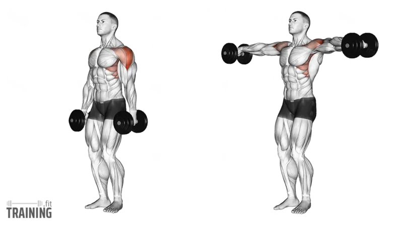
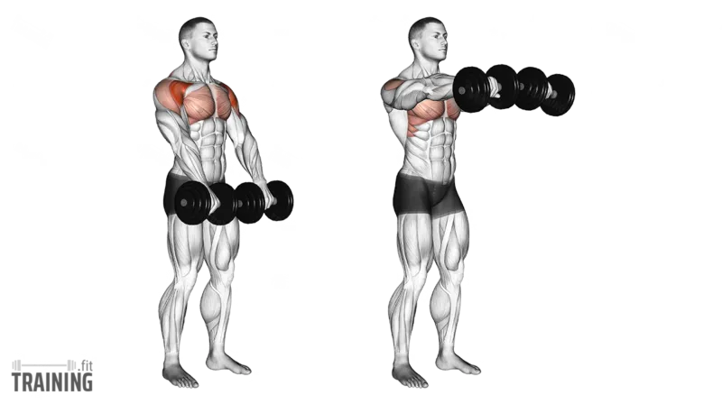
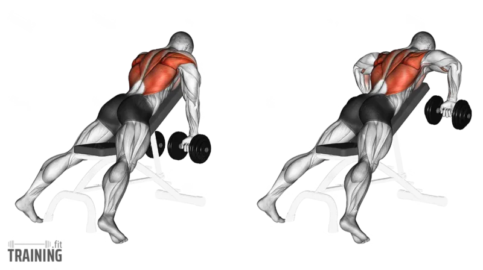
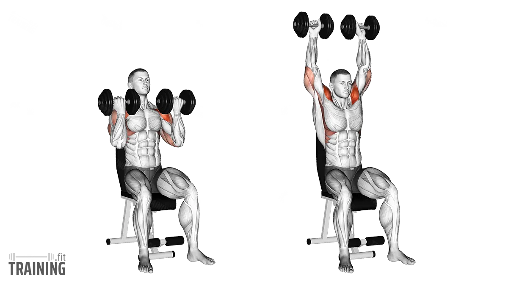
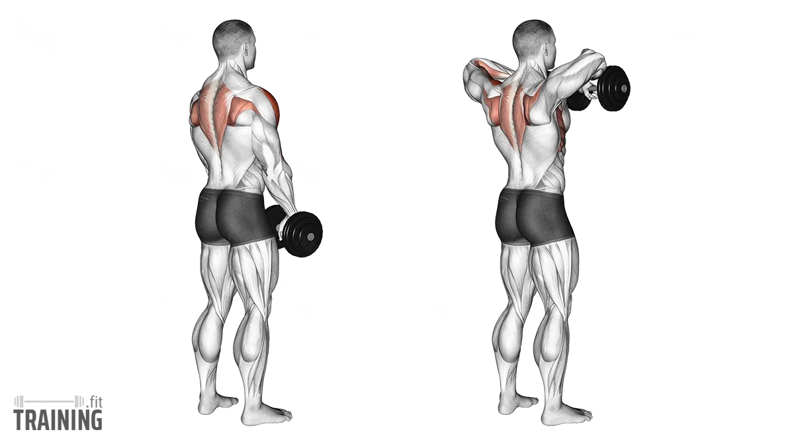

Exercise 01
Seated Dumbbell Shoulder Press
Builds the front delts, side delts, and triceps. One of the main mass-builders for shoulders.

Form
- Sit upright with dumbbells at shoulder level
- Keep your chest up and core tight
- Press the dumbbells straight overhead
- Lower them slowly back to shoulder height
- Do not overarch your lower back
Sets & Reps
Growth
3–4 × 8–12
Strength
4 × 5–8
Control
3 × 10–12
Tip: Keep the press controlled. Do not bounce the dumbbells from the bottom.
Fact: Overhead pressing is one of the best ways to build overall shoulder size and pressing strength.
Exercise 02
Dumbbell Lateral Raise
Targets the side delts, which help create wider-looking shoulders.

Form
- Stand tall with dumbbells at your sides
- Keep a slight bend in the elbows
- Raise the dumbbells out to the sides until about shoulder height
- Lower them slowly
- Keep your traps relaxed
Sets & Reps
Growth
3–4 × 10–15
Strict
3 × 12–15
Burnout
2–3 × 15–20
Tip: Lift with your elbows, not your hands. That helps target the side delt better.
Fact: Lateral raises are one of the best exercises for building the shoulder width look.
Exercise 03
Dumbbell Front Raise
Mainly targets the front delts, with some upper chest involvement.

Form
- Stand tall with dumbbells in front of your thighs
- Raise the dumbbells forward to about shoulder height
- Keep your arms controlled, not swinging
- Lower slowly back down
Sets & Reps
Growth
3 × 10–15
Isolation
2–3 × 12–15
—
—
Tip: Do not use momentum. If you have to swing, the weight is too heavy.
Fact: Your front delts already get a lot of work from pressing exercises, so front raises are best used as extra isolation — not the main movement.
Exercise 04
Chest-Supported Rear Delt Row
Targets the rear delts, upper back, and traps. Builds the back side of the shoulders.

Form
- Lie chest-down on an incline bench
- Hold dumbbells with arms hanging down
- Pull your elbows out and back
- Squeeze the rear delts and upper back at the top
- Lower slowly under control
Sets & Reps
Growth
3–4 × 10–15
Strict
3 × 12–15
—
—
Tip: Think about pulling your elbows wide instead of straight back. That hits the rear delts more.
Fact: Rear delt work is very important for balanced shoulders and better posture.
Exercise 05
Seated Shoulder Press (Back-Supported)
Another seated press variation with back support for more stability and shoulder isolation.

Form
- Sit with your back firmly against the pad
- Start with dumbbells at shoulder level
- Press overhead until your arms are extended
- Lower with control to the starting position
- Keep wrists stacked over elbows
Sets & Reps
Growth
3–4 × 8–12
Strength
4 × 6–8
Volume
3 × 10
Tip: Use the back support to focus on your shoulders, not on compensating with your lower back.
Fact: The seated version usually allows better isolation of the shoulders than standing presses.
Exercise 06
Dumbbell Upright Row
Works the side delts, traps, and upper shoulders.

Form
- Stand tall with dumbbells in front of your thighs
- Pull the dumbbells upward close to your body
- Bring elbows up to about shoulder height
- Lower slowly with control
Sets & Reps
Growth
3 × 10–12
Isolation
2–3 × 12–15
—
—
Tip: Do not pull too high if it bothers your shoulders. Stop around shoulder height.
Fact: Upright rows can be effective, but some people feel shoulder discomfort — good form and moderate weight matter a lot.
Best Shoulder Workout Order
Hit all 3 heads — front, side, and rear:
Seated Dumbbell Shoulder Press — 3–4 sets
Back-Supported Shoulder Press — 3 sets
Dumbbell Lateral Raise — 3–4 sets
Chest-Supported Rear Delt Row — 3 sets
Front Raise — 2–3 sets
Dumbbell Upright Row — 2–3 sets
This covers all 3 heads: Front delt (presses + front raise), Side delt (lateral raise + upright row), Rear delt (rear delt row).